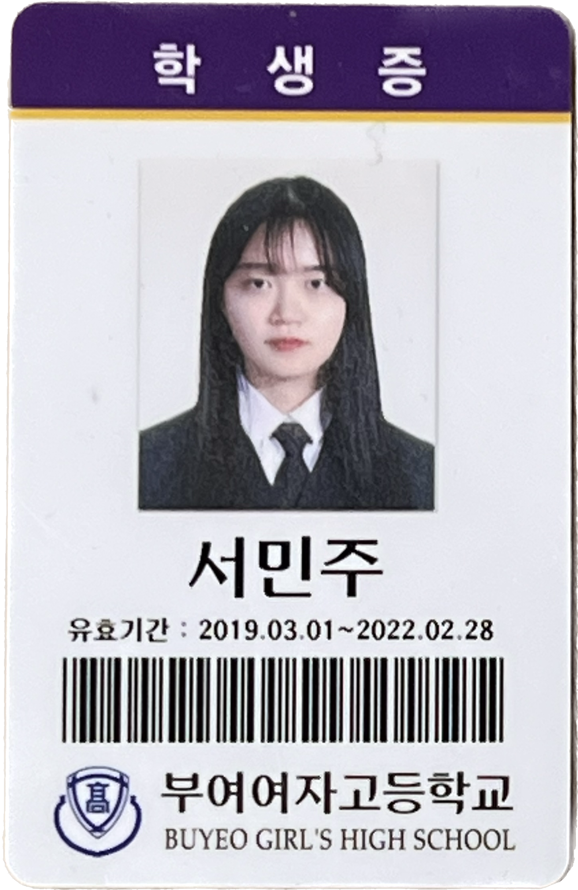
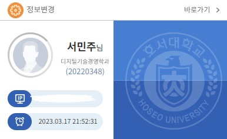

서민주(Seo-Minju)
이메일 : xi1llid@naver.com
전화번호 : 010-6782-1428
인스타그램 : @min_zzu13

저는 충청남도 부여군에 위치한 부여여자고등학교를 졸업하였으며
3년 개근상과 효행상, 여러 교내경진대회 상을 수상한 이력이 있습니다.
뿐만 아니라 인문학 동아리를 개설하여 부회장을 맡아 팀원을 이끌었고
동아리 홍보 팜플렛 제작과 동아리 답사를 이끄는 역할을 하였습니다.

또한 3년의 노력 끝에 호서대학교 디지털기술경영학과에 입학하게 되었습니다.
평소 컴퓨터 프로그래밍과 4차 산업혁명 시대에 관심이 많아 들어오게 되었고
디지털 콘텐츠와 마케팅에 대한 전공 수업을 공부중에 있습니다.
아래의 영상은 디지털 콘텐츠 제작의 이해 전공과목을 들으며 배웠던 기술을 적용하여 만든 브이로그입니다.
컷편집과 오디오 추가, 누끼를 딴 사진등을 추가하였고 친구들의 초상권을 위해 뒷 부분은 아쉽게도 잘랐습니다.